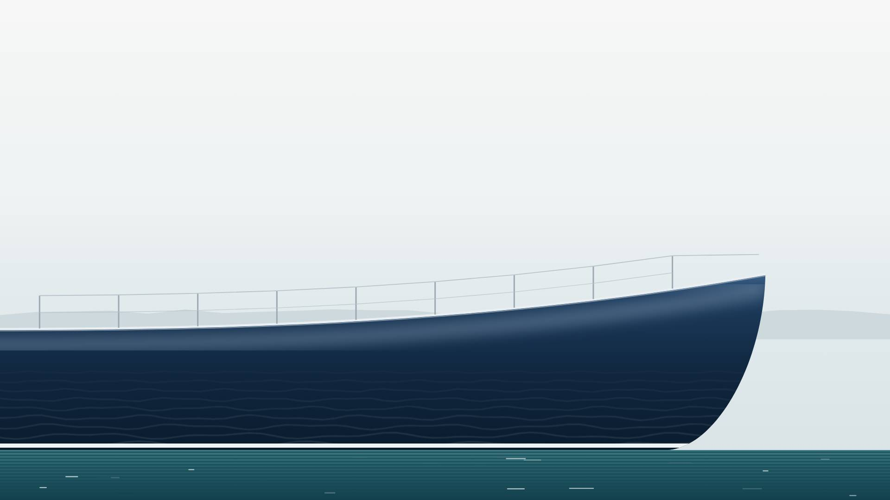

Boat detailing at your dock · Naples, Florida
Gloss above the waterline.
Shoalbright washes, compounds, polishes and protects boats where they’re kept, so salt and sun don’t get the last word.
The polish
From chalky to deep
Gulf sun turns gelcoat pale and chalky. Drag across the hull, or use the slider, to see what compounding and polishing bring back.
OxidisedPale, chalky, rubs off on your hand.
CompoundedThe dead surface is cut away.
Polished and sealedThe colour comes back deep, then gets protection.
An illustration made for this page, not a photo of a real boat.
Above the line, shine.Below it, the Gulf.
Everything from the rub rail up
Choose one pass or the full set. We bring our own water filter, buckets and polishers; you tell us where the boat is.
- Wash and dry
- Fresh water, soft brushes and a chamois, deck to waterline.
- Compound and polish
- Chalky gelcoat cut back and polished to its colour.
- Wax or sealant
- A protective coat after polishing, [product type].
- Stainless and brightwork
- Rails, cleats and fittings polished; teak cleaned.
- Canvas, vinyl and glass
- Covers, seats and windscreens cleaned and protected.
- Interior
- Cabin, head and cushions cleaned; hatches aired.
Rates
- Wash and dry
- [price per foot]
- Compound and polish
- [price per foot]
- Wax or sealant
- [price per foot]
- Regular wash plan
- [price per visit, weekly or every two weeks]
How a polish goes
Four passes, one boat at a time
- i
WashSalt and grime off first, so nothing gets ground in.
- ii
CompoundThe chalky layer cut away, a section at a time.
- iii
PolishFine passes until the reflection is sharp again.
- iv
ProtectWax or sealant, then a last wipe and a walk-round with you.
Polished gelcoat, close up (a drawing made for this page)
At your dock
We come to the boat
At home on a canal, on a lift, or in a marina slip. Tell us where it is and when you’d like it done; you don’t need to be there.
- Where[areas and marinas served]
- What we needA water spigot within reach, and the marina’s permission where it’s required
- Boats[size range, for example up to a set length]
- Insured[insurer and type of cover, to be supplied]
- Hours[days and hours]
Book a dock visit
Tell us the boat, the length and where she’s kept.
[phone]